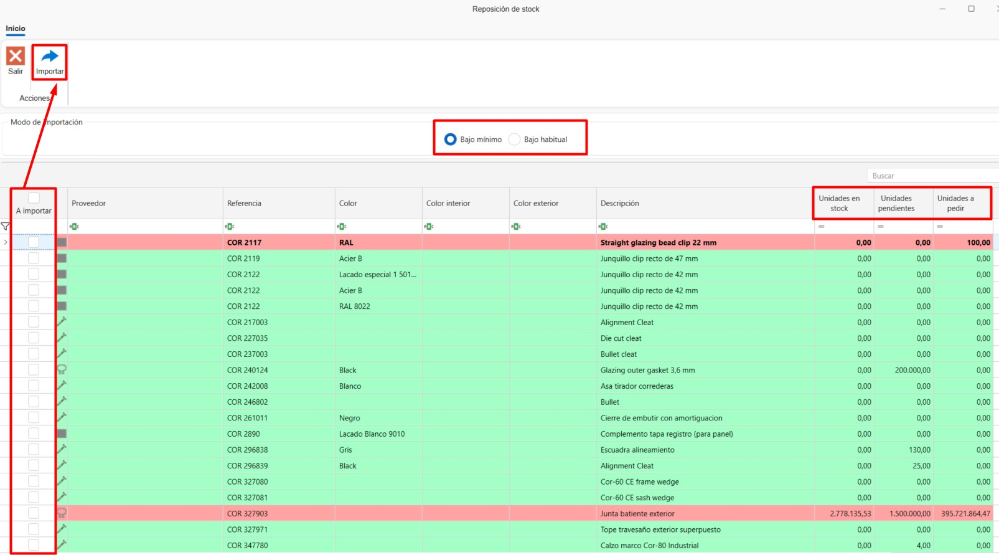
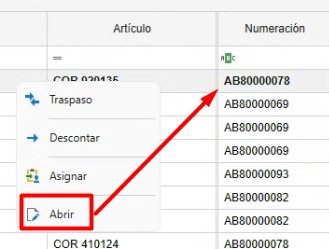
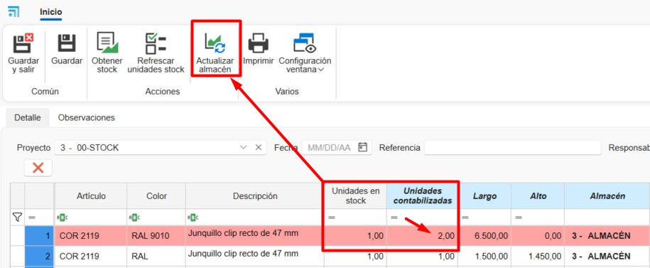
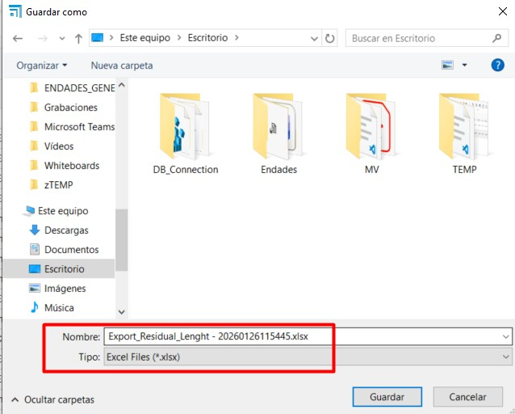
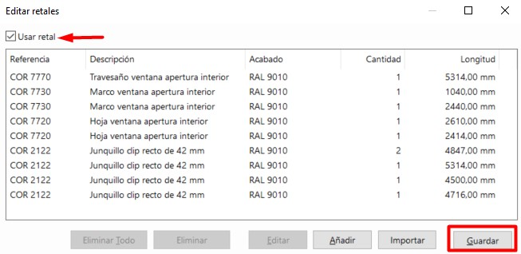
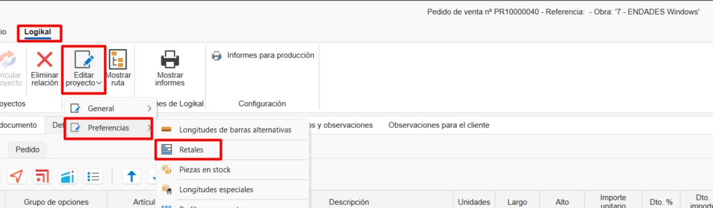

Sistema de controle de estoque ENBLAU
1. Propósito
Este manual foi desenvolvido para novos usuários do sistema de controle de estoque utilizado pelos Clientes e Endades. O objetivo principal é fornecer um guia detalhado para a gestão eficiente de projetos, desde a criação de pedidos até a otimização do processo de produção no ENBLAU. Este documento abrange os passos necessários para realizar as operações principais do sistema e está estruturado de forma sequencial para facilitar a compreensão.
2. Gestão de pedidos de compra
2.1. Pedidos de compra
- No menu principal Compras, acesse a seção "Pedidos de Compra".
- Especifique os materiais necessários e suas quantidades.
- Em caso de alterações nas referências, adicione-as manualmente se estiverem configuradas na base de dados.
-
No pedido de venda (na seção Venda), selecione o documento e vá para a aba Material necessário para gerar a lista de materiais do pedido.
-
As linhas dos artigos exibidas em verde indicam que há material em estoque para esse projeto ou para o projeto atribuído como Stock. As linhas exibidas em vermelho indicam que não há materiais nesse projeto ou em estoque.
-
Você pode indicar se deseja ou não comprar, caso já tenha no depósito. Para cada material será exibida a informação: unidades em estoque, unidades reservadas, unidades pendentes.

-
⚠️ Importante! Para atribuir um projeto do tipo stock, vá em Geral - Configuração - Compras e Armazém, e indique no campo suspenso Projeto para stock um projeto previamente criado para gestão de estoque.

-
Confirme em Pedir material e envie o pedido ao fornecedor correspondente.
-
Na seção Armazéns, existe a opção Pendente de receber, que mostra uma lista com os materiais pendentes de recebimento para cada projeto e pedido de compra.

- Sobre a linha do artigo, clique com o botão direito para abrir o pedido de compra desse material:

ℹ️ Nota: Para informações detalhadas sobre pedidos de compra, consulte: Pedidos de Compras
⚠️ Importante! Para realizar o pedido de materiais no documento de venda, em alguns casos, são necessárias permissões especiais. Essa permissão também é necessária para fabricar ou instalar.

2.2. Atribuir materiais a projeto
- No Material necessário, durante o processo de listar e solicitar materiais, você pode, conforme a necessidade, atribuir artigos de outro projeto ao projeto atual. No menu de locais, clique com o botão direito sobre a linha - Atribuir:

- Indique o projeto de destino (por padrão é o atual) e a quantidade (por padrão a necessária para o projeto):

- Ao atribuir o artigo ao projeto atual, a unidade de estoque será automaticamente transferida para o projeto de destino, somando a quantidade atribuída, e será subtraída do projeto de origem. O artigo ficará verde.
⚠️ Importante! Certifique-se de que os materiais do projeto de origem possam ser utilizados para o traspasse dos artigos.
- Colunas Tem stock no projeto e Tem stock no armazém. Estas colunas são utilizadas para filtrar os materiais atribuídos ao projeto do documento de venda e os materiais disponíveis no projeto definido para gestão de stock. Desta forma, haverá controlo dos materiais disponíveis antes de emitir uma ordem de compra ao fornecedor.

- Opção Atribuir material. Esta função permite atribuir automaticamente materiais a partir do projeto definido para gestão de stock.

2.3. Materiais reservados
- Em documentos de Vendas, Compras e Projetos, é possível reservar materiais para o projeto, utilizando Materiais reservados no menu suspenso de Armazém.

- Abrirá uma janela de Material reservado, e na seção Material do projeto, você pode arrastar materiais dos pedidos para o fornecedor:

- Na seção de Armazéns, é possível visualizar todos os materiais reservados de um projeto:


ℹ️ Nota: O uso de material reservado é apenas visual; não impede a utilização dos materiais mesmo que estejam reservados. Recomenda-se o uso de Atribuir materiais a projeto para melhor controle de estoque.
2.4. Reposição de estoque
- Em Compras, existe a opção Reposição de estoque, que exibirá uma lista de materiais a solicitar quando estiverem abaixo do mínimo ou do habitual.

-
Materiais marcados em vermelho estão abaixo do mínimo ou do habitual.
- A coluna Unidades em estoque mostra a quantidade disponível.
- A coluna Unidades pendentes mostra a quantidade pendente de receber.
- A coluna Unidades a pedir indica o que falta para atingir o máximo em estoque.
- Materiais que cumprem o mínimo ou habitual não aparecem na lista.
-
Materiais marcados em verde não possuem máximo definido.
- Por padrão, é adicionada uma unidade em mínimo e habitual para exibição na lista de reposição.
-
Marque a caixa A importar para os materiais a solicitar e depois clique em Importar para adicionar ao pedido de compra.

ℹ️ Nota: Para mais informações sobre como definir mínimo, máximo e estoque habitual, consulte Configuração de materiais.
3. Gestão de armazéns e movimentos
3.1. Layout de armazéns
- No menu principal Armazéns - Estoque, é possível adicionar ou editar armazéns.

- Configure o layout do armazém em ENBLAU – Configuração – Armazém – Layout:

- Crie zonas, prateleiras e posições para organização clara. Exibido em vista de árvore.
-
Relacione cada posição à área de armazenamento correspondente. Exemplo:
- Adicionar Planta: Adiciona uma planta e permite indicar o armazém.
- Adicionar Zona/Subzona: Adiciona zona ou subzona abaixo do local selecionado.

3.2. Estoque
- Em Armazéns - Estoque, você tem a lista com opções Resumo, Resumo com localização e Detalhado:


-
Resumo: Lista resumida de materiais agrupados por projeto. Mostra totais de unidades, unidades pendentes e reservadas.
-
Resumo com localização: Lista resumida de materiais por projeto e sua localização.
-
Detalhado: Lista detalhada de materiais com projeto de compra, projeto atribuído, localização e separado por documento de guia de compra. Permite descontar, transferir e atribuir artigos.
3.3. Movimentos em armazém
- Realize movimentos de materiais entre zonas e projetos:
- Em Armazéns - Estoque – Detalhado, clique com o botão direito sobre o material para transferir, descontar ou atribuir.

- Selecione o material do projeto.
-
Descontar: Indique projeto, número do pedido, responsável e quantidade (barras e peças) ou comprimento (juntas).

-
Transferir: Indique origem, destino, quantidade (barras e peças) ou comprimento (juntas).

-
Atribuir: Indique projeto de destino, responsável, quantidade (barras e peças) ou comprimento (juntas). Função igual à de Material necessário - Atribuir materiais a projeto.

-
Movimentos de entrada, saída, transferência e atribuição são refletidos na Guia de remessa. Entradas e saídas podem ser vistas em Armazém – Movimentos.


- Em Movimentos de armazém existe a função Devolver. Clique com o botão direito sobre o movimento de saída e selecione devolver:

Abrirá uma janela Movimento de devolução, onde indica unidades e localização a devolver. Por padrão, é a localização da saída do material:

- A opção Abrir na lista detalhada abre a guia (coluna numeração) do artigo selecionado:

- A opção Adicionar retalho, disponível a partir da lista detalhada, aplica-se exclusivamente a artigos do tipo painel e permite adicionar retalhos de painéis ao stock. Para tal, devem ser indicados a Localização e as dimensões Comprimento x Altura necessárias. Esta ação irá gerar um movimento de entrada do painel em stock.


3.4. Relatórios de armazém (inventário)
3.4.1. Relatórios de stock
Na secção Armazéns → Stock podem ser impressos diferentes tipos de relatórios:
- Resumo: Existem dois relatórios: Inventário e Inventário por data.

Inventário
Gera um relatório de inventário com base nos filtros aplicados na lista do armazém.
Inclui as seguintes colunas: Artigo, Projeto, Unidades, Unidades pendentes e Unidades reservadas.

Inventário por data
Gera um relatório de inventário até à data selecionada.
Inclui as seguintes colunas: Artigo, Descrição, Unidades e Valor.

- Resumo com localização: Inclui o relatório Inventário detalhado (resumo).
Inventário detalhado (resumo)
Gera um relatório de inventário com base nos filtros aplicados na lista detalhada do armazém.
Inclui: Localização do armazém, Artigo, Descrição e Unidades.

- Detalhado: Inclui o relatório Inventário detalhado.
Inventário detalhado
Gera um relatório de inventário com base nos filtros aplicados na lista detalhada do armazém.
Inclui: Projeto, Número da guia de compra, Localização do armazém, Artigo, Descrição e Unidades, agrupadas por referência e comprimento.

3.4.2. Relatórios de movimentos de armazém
Na secção Armazéns → Movimentos de armazém podem ser impressos os seguintes relatórios:

- Movimentos
Apresenta uma lista dos movimentos visíveis na lista principal.
Inclui: Data do movimento, Responsável, Projeto atribuído, Localização do armazém, Artigo, Descrição, Unidades e Tipo de movimento.

- Movimentos I
Apresenta uma lista alternativa dos mesmos movimentos.
Inclui: Tipo de movimento, Data do movimento, Responsável, Documento, Unidades, Valor, Artigo e Descrição.

3.5. Finalizar projeto (projeto de destino)
Ao finalizar um projeto, você tem a opção de indicar um Projeto de destino onde os materiais restantes serão atribuídos. Por exemplo, você pode atribuí-los ao projeto definido para gestão de estoque.

Processo ao finalizar: - Especificar o projeto de destino para os materiais excedentes - O sistema gera automaticamente um movimento de entrada no projeto atribuído - Os materiais mantêm sua localização original no armazém - Apenas a atribuição do projeto é modificada, não a localização física
4. Inventários
- Na seção Armazéns - Inventários é possível realizar uma normalização no armazém considerando o estoque em tempo real.

4.1. Novo inventário
-
Para criar um inventário, acesse a seção de Inventários e selecione Novo.

4.2. Contabilização de Estoque
1. Em um inventário, selecione o Projeto definido como Stock.
2. Clique em Obter estoque para carregar a lista de materiais do projeto Stock:


3. Na coluna Unidades contabilizadas, insira as unidades reais em estoque do artigo, conforme contabilizado na localização do armazém.

4. Após inserir as unidades na coluna Unidades contabilizadas, as linhas dos artigos serão exibidas em vermelho, indicando alteração de unidades.
Em seguida, clique em Atualizar armazém para registrar a regularização de acordo com as unidades contabilizadas.

5. Após atualizar o armazém, as linhas serão exibidas em verde.
- Nas colunas Unidades Stock e Unidades contabilizadas serão refletidas as unidades atualizadas.
- Na coluna Contabilizado será marcada uma caixa.
-
Na coluna Data contabilizada aparecerá a data da regularização.

-
Este processo gera um movimento de regularização (entrada ou saída) no armazém:

ℹ️ Nota: Na lista do inventário, apenas entradas e saídas são refletidas.
Não é possível realizar movimentos do tipo transferência a partir desta lista.
6. Também é possível adicionar novos artigos a partir das árvores de:
- Artigos (materiais ENBLAU)
-
Artigos importados (materiais do Logikal)
Para isso:
- Arraste o artigo para a lista do inventário.
- Indique unidades, dimensões (barra, superfície ou junta), localização em estoque e preço.

ℹ️ Nota: Ao adicionar um artigo novo ao inventário, sempre indique uma localização.
Caso contrário, não será atualizado no estoque.
7. Com o botão Atualizar unidades em estoque, as unidades atuais de cada linha do inventário são atualizadas.

4.3. Relatório de regularização do inventário
- É possível Imprimir a lista do inventário, onde são exibidas as colunas:
Artigo, Descrição, Data da última verificação, Unidades em estoque, Unidades contabilizadas e Localização.


- Este relatório tem como objetivo facilitar a contabilização manual do estoque no armazém antes de proceder à atualização na lista do inventário.
Na coluna Unidades contabilizadas, deve-se indicar a quantidade real de cada artigo em estoque.

5. Estoque necessário
- Uma vez criada a produção e enviada para a oficina, é possível visualizar e descontar os materiais manualmente.

- Abre-se uma janela de Estoque necessário, indicando se o material está disponível nos armazéns e em qual posto (monitor) será descontado. Para descontar o material, marque a caixa na coluna Estoque a descontar do material.

⚠️ Importante! Se não houver o material em estoque, não será descontado.
ℹ️ Nota: Para um controle mais detalhado do estoque, recomenda-se usar o app móvel enSITE para esse tipo de desconto de material. Para mais informações sobre o app: 2.1. Recepção em enSITE
6. Materiais importados
Na seção Armazéns → Material importado encontra-se a lista de todos os materiais importados do Logikal.
6.1. Configuração de materiais
Nesta seção é possível definir, para cada artigo, uma série de valores padrão que afetam a gestão de compras e produção:
-
Comprar:
Se esta caixa estiver marcada, o material será proposto por padrão como “a comprar” quando for listado na seção Material necessário. -
Montado no destino:
Se esta caixa estiver marcada, o material será montado no destino durante o processo no posto Picking dentro do enCONTROL. -
Controle de estoque:
Se esta caixa estiver marcada, o material ficará visível na lista de Reposição de estoque a partir da seção do pedido de compra. -
Estoque mínimo, estoque máximo e estoque habitual: Permite definir valores de referência para a gestão de estoque, úteis para alertas, reposições ou planejamento.

Na seção de Reposição de estoque em compras, é possível gerar uma lista de materiais abaixo do mínimo ou habitual, conforme os valores definidos para cada material.
ℹ️ Nota: A configuração correta destes campos melhora significativamente o controle de inventário, o planejamento de compras e a rastreabilidade dos materiais durante a produção.
7. Produto acabado
O produto acabado é aquele que foi completamente fabricado e passou pelo posto de Verificação final no enCONTROL.
Na seção Armazéns → Produto acabado encontram-se duas listas principais:
- Localização de produtos
- Movimentos de produto

7.1. Localização de produtos
- Na lista de Localização de produtos é exibida a informação e a localização atual do produto acabado, conforme definido no posto de Verificação final no enCONTROL.

-
A partir desta vista, clicando com o botão direito em uma linha, é possível realizar as seguintes ações:
-
Mover o produto para outra localização.
- Dar saída ao produto.
- Abrir o documento de produção relacionado a esse produto.

7.2. Movimentos de produto
-
Na seção Movimentos de produto são registrados todas as operações realizadas com os produtos acabados, incluindo:
-
Entrada.
- Saída.
- Transferência.

- Clicando com o botão direito em uma linha cujo tipo de movimento seja saída, habilita-se a opção Devolver.

-
Ao selecionar esta opção, abre-se a janela Devolução de produto acabado, onde deve-se:
-
Indicar a nova localização do produto.
- Aceitar a operação.

Após concluir o processo, o sistema registrará um novo movimento do tipo Entrada no histórico do produto.
ℹ️ Nota: Esta funcionalidade é útil para gerenciar devoluções internas, produtos rejeitados ou realocações logísticas dentro do armazém.
ℹ️ Nota: A gestão correta do produto acabado garante melhor controle de inventário, facilita a rastreabilidade e agiliza a preparação de expedições ou entregas.
8. Gestão de retalhos no Logikal
A gestão de retalhos no Logikal permite reutilizar perfis sobrantes, otimizando o consumo de material e reduzindo desperdícios. Existem várias formas de gerir os retalhos, detalhadas a seguir.
8.1. Importar retalhos do Excel
- No ENBLAU, aceder a Armazéns → Stock → Detalhado e filtrar a lista por retalhos.

ℹ️ Nota: Recomenda-se aplicar o filtro por projeto atribuído para considerar apenas os retalhos que devem ser utilizados.
- No menu Exportar → Exportar perfis, guardar o ficheiro Excel numa localização local do Windows.



-
No Logikal, abrir o projeto onde os retalhos serão utilizados. Ir a Projeto → Retalhos para abrir a janela Editar Retalhos.
-
Selecionar Importar e carregar o ficheiro Excel de retalhos previamente exportado do ENBLAU.


ℹ️ Nota: As referências mostradas em vermelho indicam que o perfil não existe no projeto atual.
- Na janela Editar Retalhos, marque a opção Usar Retalhos e guarde as alterações.


- O relatório de Otimização de Cortes mostrará os retalhos disponíveis para cada perfil.

8.2. Adicionar retalhos manualmente
No Logikal, na janela Editar Retalhos, a opção Adicionar permite inserir retalhos manualmente, especificando:
- Referência do perfil (existente no projeto)
- Quantidade
- Comprimento

8.3. Gerir retalhos a partir do ENBLAU
- No ENBLAU, num documento de vendas, aceder a:
Logikal → Editor de projeto → Preferências → Retalhos
Isto abrirá a mesma janela Editar Retalhos do Logikal.

ℹ️ Nota: O funcionamento é exatamente o mesmo descrito anteriormente no Logikal.
- Ao listar o material a partir do documento ENBLAU, será mostrado o comprimento do retalho a utilizar para os perfis do projeto.

ℹ️ Nota: Se o material estiver atribuído, por exemplo, a um projeto de Stock, é necessário atribuí-lo ao projeto em que será utilizado.
9. Controle de estoque e relatórios
- Monitore o estoque necessário a partir da seção "Produção".
- Identifique materiais reservados e pendentes em tempo real.
- Gere relatórios de inventário para avaliar o uso de materiais e planejar futuras compras.
10. Resolução de problemas comuns
- Erro ao importar referências: Verifique se as referências estão configuradas na base de dados.
- Materiais excedentes ou faltantes: Certifique-se de registrar corretamente localizações e quantidades ao receber materiais.
- Problemas com o layout do armazém: Revise a configuração de zonas e ajuste conforme necessário.
11. Conclusão
Este manual oferece um guia passo a passo para os principais processos no sistema de controle de estoque. Seguindo estas instruções, os usuários poderão gerir eficientemente os inventários, melhorar a produção e otimizar a relação com fornecedores. Para suporte adicional, contate o administrador do sistema.
 Español
Español
 English
English
 Italiano
Italiano
 Português
Português